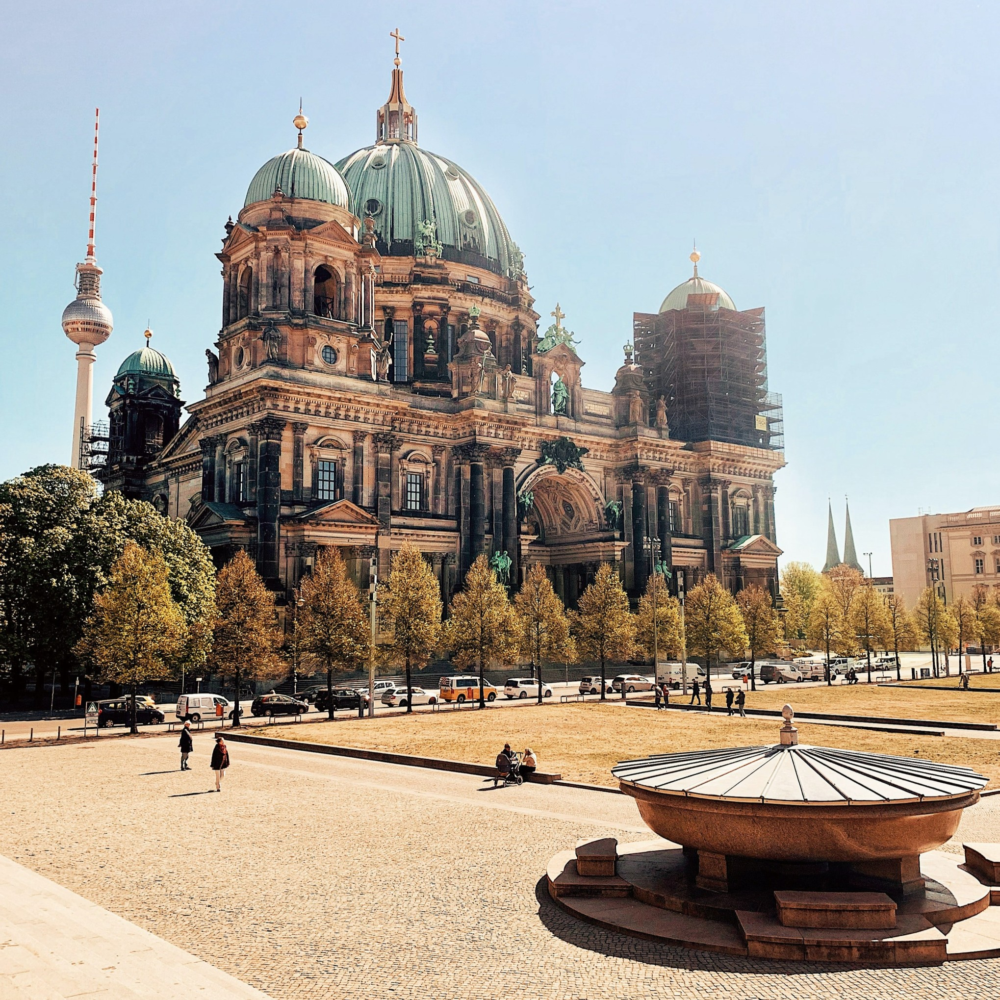

Why Berlin?
A city rich in history.
Berlin is renowned for its exceptional range of landmarks, vibrant cultural scene and way of life that's somehow all-go yet relaxed. In fact, the city is best known for its striking contrasts.
Since the 2000s, Berlin has seen the emergence of a cosmopolitan entrepreneurial scene and is well known for its festivals, diverse architecture, nightlife, contemporary arts, and a very high quality of life.
Berlin's history has left the city with an eclectic assortment of architecture. Historical buildings stand alongside modern architecture as the past and present intermingle.